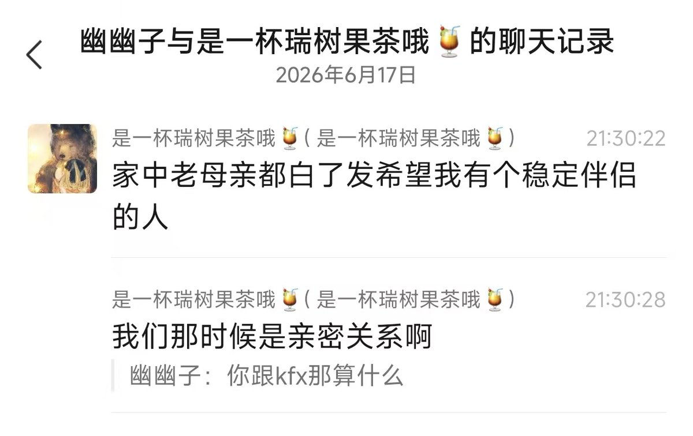

爆一个把自己给自己洗脑，商业代孕合法化、把afab伴侣当作子宫、不接受非二元（认为人必须要有传统二元社会的刻板印象，即男有男样，女有女样）、不接受自己伴侣切除子宫卵巢的家伙。@nayuki_leung
先说代孕和不尊重自己伴侣的性别认同（不想要伴侣去做切除子宫卵巢），你自己也发了推文认为这样是不对的，为什么你在和ta交往过程中，你还是要去想着惦记ta的子宫 有生小孩的幻想，ta在和你交往前就和你讲过，自己是poly，为什么你还会和ta交往，你如果是单偶制，那么就不应该和ta交往的呀，总是会爆掉的，这个责任是在你身上的吧，就因为觊觎ta的子宫吗？那你有爱过你的伴侣吗，我想显然是没有的。自家的老母亲想要自己有个稳定的伴侣，想要有一个孙子，然后自己又不愿意detrans，然后给自己洗脑代孕合法化的同时，又去觊觎伴侣的子宫，幻想自己伴侣生小孩给自己，我能说你一句妈宝跨女吗（我现在在尊重你的性别认同是我有道德）
我会引用今天ta和你的对话内容，都是真实可信的，让推友评判一下好了，你把商业代孕给自己洗脑成合法化，还要往自己身上添加一些没有那么负罪感的心理，那你去🇷🇺好了，那里商业代孕完全合法化的。
先说代孕和不尊重自己伴侣的性别认同（不想要伴侣去做切除子宫卵巢），你自己也发了推文认为这样是不对的，为什么你在和ta交往过程中，你还是要去想着惦记ta的子宫 有生小孩的幻想，ta在和你交往前就和你讲过，自己是poly，为什么你还会和ta交往，你如果是单偶制，那么就不应该和ta交往的呀，总是会爆掉的，这个责任是在你身上的吧，就因为觊觎ta的子宫吗？那你有爱过你的伴侣吗，我想显然是没有的。自家的老母亲想要自己有个稳定的伴侣，想要有一个孙子，然后自己又不愿意detrans，然后给自己洗脑代孕合法化的同时，又去觊觎伴侣的子宫，幻想自己伴侣生小孩给自己，我能说你一句妈宝跨女吗（我现在在尊重你的性别认同是我有道德）
我会引用今天ta和你的对话内容，都是真实可信的，让推友评判一下好了，你把商业代孕给自己洗脑成合法化，还要往自己身上添加一些没有那么负罪感的心理，那你去🇷🇺好了，那里商业代孕完全合法化的。
